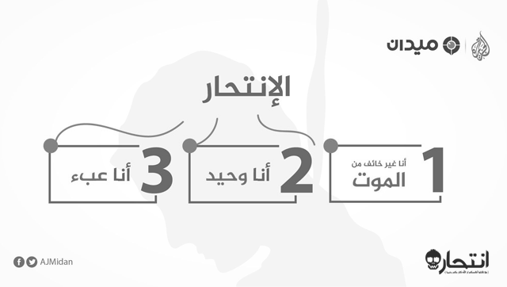

حسنا، الأمر بسيط، تخيل أنك تقف الآن على سطح مبنى بارتفاع سبعين طابقا، وأنك تقف قريبا للغاية من حافة سطح هذا المبنى التي لا يوجد سور يدور حولها، حتى يكون بإمكانك رؤية الشوارع والسيارات بالأسفل، وترى المارة كأنهم مجموعات من النمل لصغر حجمهم، ما شعورك حينما تقترب من تلك الحافة؟
بالضبط، سوف يزداد توترك شيئا فشيئا، ثم في النهاية سوف ترجع إلى الوراء كي لا تسقط من الأعلى، هذا هو الخوف، إنه المركب الغريزي الذي يحميك من الإضرار بحياتك أيا كانت النتائج، حتّى إننا -نحن البشر- قد طوّرنا مخاوف إضافية بجانب خوفنا من السقوط من أعلى، من الأسد، أو من الثعابين، فأصبحنا نصاب بالخوف من الأماكن المغلقة، المرتفعات، الأشياء المدببة، الماء، وحتى القطط.
من تلك النقطة ينطلق توماس جوينر (Thomas Joiner) متخصص علم النفس الإكلينيكي بجامعة فلوريدا ليضع نموذجا يختلف كثيرا عما يظنه الناس عن ظاهرة الانتحار، فالكثيرون منّا يعتقدون أن المقدم على الانتحار هو شخص جبان، خائف، وهذا غير صحيح، إن أحد أسباب الانتحار في الحقيقة هي تطوير المقدم عليه لحالة عدم خوف من الموت، لكن قبل الخوض في تلك النقطة دعنا أولا نتعرف إلى ما يسميه جوينر "الرغبة في الانتحار" (Desire For Suicide)، وهي أن يطور الشخص أفكارا انتحارية لكنه لا يقدم على الانتحار بسببها.
أنا وحيد

لذلك نجد أن حالات الانتحار تتنقل دائما في أشخاص تعرضوا لعنف منزلي شديد بينما كانو أطفالا، أو تم استغلالهم جنسيا من قبل أفراد في العائلة، أو تعرضوا لمشكلات منزلية شديدة بين الأهل طوال حياتهم، أو الذين فقدوا أشخاصا غاية في الأهمية بحياتهم، كذلك تظهر نيّات الانتحار في المجموعات المنعزلة اجتماعيا، أو حتّى في المساجين بزنازين انفرادية لفترات طويلة، كذلك ترتفع معدلات الانتحار بين الفئات المستضعفة التي تعاني من التمييز مثل اللاجئين والمهاجرين.
في الحقيقة يفتح ذلك الجزء من نموذج جوينر الباب لفكرة أخرى مهمة تتعلق بأسباب الانتحار، دعنا مثلا نبحث خلف الأيام التي انخفضت فيها معدلات الانتحار بفارق شديد في الولايات المتحدة لنجد أن 11 (سبتمبر/أيلول) هو أحدها، ذلك لأن الشعور بالانتماء في قضايا قومية كتلك يرتفع في المواقف الحزينة -أو حتّى التي تدعو إلى الفخر أو إلى الفرح- مما يخفض بدوره من نيّات الانتحار، أضف إلى ذلك أنه -على عكس الشائع بسبب السينما ربما- تنخفض نسب الانتحار في أيام الأعياد لنفس السبب، فالأعياد هي فرصة جيدة لكي يشعر كل شخص منّا بالانتماء إلى عائلته.
لننتقل الآن إلى المعيار الثاني من نموذج جوينر الذي يكوّن الرغبة في الانتحار، إنه تصور أنك عبء (Perceived burdensomeness)، أي أن ينظر الشخص إلى نفسه على أنه عبء على الآخرين من حوله، حيث يكوّن فكرة تقول: "موتي أفضل من حياتي بالنسبة لهم"، والتي غالبا ما تندمج مع رسالة أخرى متكررة لذاته يقول فيها: "أنا أكره نفسي"، فيقلل كثيرا من تقديره لذاته ويشعر بالعار واللوم الدائم لنفسه، وغالبا ما يقترن ذلك بحالة من التوتر الشديد، يحدث ذلك لعدة أسباب تتعلق بالبطالة مثلا، التشرد، السجن، الحياة بلا منزل، المرض الشديد خاصة مع تقدم العمر والحاجة للرعاية من قبل الآخرين، الإعاقة، أو أية ظروف تدفع به لتكوين أفكار كتلك.

أشهر حالات الانتحار هي الانتحار بالتقليد مثل اترتفع معدلات الانتحار بعد انتحار ممثل شهير مثل روبين ويليامز
هنا يمكن أن نفنّد أحد أشهر الأخطاء في الفهم عن الانتحار، وهي ظن البعض أن الشخص المقدم عليه غالبا ما يكون أنانيا، يفكر في نفسه فقط، حيث يقول البعض: "كيف يمكن له أن يتركنا هكذا إلا إذا كان يفكر في نفسه فقط؟ في مشكلاته فقط؟"، وتلك هي الفكرة التي تقود بدورها إلى خطأ في طريقتنا في التعامل مع شخص يود أن ينتحر، حيث ربما يساعد فهمنا لشكل معاناته، تحديدا لهذا الجزء المتعلق بشعوره بالعبء، في تحقيق تعامل أفضل مع ذلك الموقف.
حينما يتعرض الشخص لحالات قاسية من معياري جوينر، الوحدة الشديدة والشعور بالعبء، لمدد طويلة فإنه يطور غالبا أفكارا انتحارية، لكن الإقدام على الخطوة القادمة، وهي خفض حالة الشعور بالخوف من الموت هو قفزة مختلفة تماما لا يمكن مقارنتها بسابقتيها، لأن مقاومة الخوف من الموت هي مقاومة للغريزة نفسها وليست مجرد مقاومة لأفكارنا، ولا يمكن لإراداتنا فقط أن تقدم عليها.
أنا غير خائف من الموت
لهذا السبب يسمى المفصل الثالث من نموذج جوينر بالقدرة المكتسبة (Acquired capability) على مقاومة الخوف من الموت، ويعني ذلك اكتساب الشخص درجة من الألفة مع الأفعال المؤلمة أو العنيفة التي -بالتالي- تعطيه درجة من الألفة مع الفعل الانتحاري، دعنا مثلا نتأمل فقدان الشهية العصابي (Anorexia Nervosa)، وهو حالة يقوم فيها المريض بتجويع نفسه وممارسة الرياضة بصورة مفرطة للغاية، لنجد أن 90% من المرضى الذين ماتوا بسببه قد ماتوا منتحرين، وذلك -حسب نموذج جوينر- دليل على صحة الفكرة القائلة إن الألفة مع العنف ضرورية لتقليل الخوف من الموت.
لذلك نجد أن نسب الانتحار ترتفع مع أشخاص قاموا بإيذاء أنفسهم جسديا على مدى زمني كبير حتّى وإن كان ذلك في البداية لأي غرض آخر غير الانتحار، وكذلك في الأفراد الذين لاقوا طفولة عنيفة، وأولئك الذين يتعرضون لحالات من العنف الشديد في أثناء العمل، كالجنود في الخطوط الأمامية بالمعارك مثلا، مع وجود نسبة تتخطى حاجز الـ 40% بالطبع للأشخاص ذوي العائلات المسكونة بحالات انتحار سابقة، فبجانب الجانب الوراثي في الحكاية فإن تعرض الشخص لوجود حالات انتحار سابقة يجعل منه أكثر ألفة مع الموت، كذلك نجد أن أحد أشهر حالات الانتحار هي الانتحار بالتقليد (Copycat)، حيث تجد مثلا أنه خلال مدة زمنية محددة يُقدم مجموعة من الطلبة بالمرحلة الثانوية على الانتحار بنفس الطريقة، أو أن ترتفع المعدلات بعد انتحار ممثل شهير مثل روبين ويليامز… إلخ.
حينما يتعرض الشخص لحالات قاسية من معياري جوينر، الوحدة الشديدة والشعور بالعبء، لمدد طويلة فإنه يطور غالبا أفكارا انتحارية (بيكساباي)
في الحقيقة يقف ذلك ليتعارض مع فكرة عامة الناس عن أن الانتحار هو تجربة لحظة، أي أنه حالة من التهور والاندفاع التي تظهر فجأة ويتم تنفيذها فجأة، لكن في الواقع يأخذ المُقدم على الانتحار -في الغالب- الكثير من الوقت لتطوير فكرته ووضع خطة، ورغم ذلك كله يظل المقدم على الانتحار مترددا حتى اللحظات الأخيرة قبل القيام بفعلته، ذلك لأن الغريزة، رغبته بالحياة، لا تزال حتى اللحظة الأخيرة ذات أثر.
وربما نجد أحد أشهر الأدلة على تلك الفكرة في ملاحظتين لافتتين للانتباه، الأولى ذات علاقة بالتردد الشديد الذي يواجهه المقدم على الانتحار في الثواني القليلة قبل اتخاذ القرار النهائي والقفز -مثلا- من فوق جسر جولدين جيت الشهير، بل إن غالبية الحالات التي تم إنقاذها، وتصويرها أثناء ذلك، لم تبد أية مقاومة تجاه عملية الإنقاذ، ما معناه أنها تراجعت فور تدخل المساعدة عن القرار، أضف إلى ذلك أنه في الكثير من الحالات، وبعد اتخاذ القرار بالانتحار، عبر إطلاق النار مثلا على جزء من الجسم، أو ابتلاع مواد سامة، المبيدات الحشرية مثلا -وهي الأداة الأكثر استخداما-، يلجأ المقدم على الانتحار إلى الاتصال بالشرطة لإنقاذه مما فعل!
نحن لا نفهم الانتحار
يحيلنا ذلك إلى خطأ شهير في الفهم يتعلق بما نتصور أننا نعرفه عن الانتحار، حيث يظن البعض أن المقدم على الانتحار هو "شخص يود أن يموت"، لكن التوصيف الأدق لتلك الحالة هو "شخص يود أن يتخلص من ألمه"، والفارق شاسع بين الحالتين، فإذا كان المقدم على الانتحار هو شخص يود أن يموت فهو سوف يحاول جاهدا أن ينفّذ ما يريد بكل الطرق سواء تدخلنا لمنعه أم لا، مما يثنينا عن التدخل، أما شخص يود أن يُنهي ألمه فيمكن أن يستمع إلى الآخرين حينما يعرضون المساعدة بأية طريقة، وهو ما يحدث بالفعل.
حسب تقرير منظمة الصحة العالمية للعامة 2015، فإن 78% من ضحايا الانتحار هم من دول متوسطة ومنخفضة الدخل
لذلك، فإن ما نود أن نقوله هنا، وهو أهم ما يمكن أن تخرج به من هذا التقرير، هو أن التدخل لمحاولة منع شخص مقدم على الانتحار سوف يحقق نتائج جوهرية، نعم تأكد من ذلك، بل إن الكثيرين من الأشخاص لا يعودون إلى تكرار المحاولة مرة أخرى بعد منعهم بأية طريقة من الانتحار بسبب تدخل آخرين، سواء بالتحدث معهم أو بتقويض قدرتهم على الإقدام على الانتحار عبر التدابير المنزلية البسيطة كإبقاء المواد السامة والأدوية بعيدا عن متناول أيديهم مثلا أو إبعاد ما يمكن أن يُستخدم كسلاح، يقودنا ذلك إلى خطأ أخير في الفهم نقع فيه، وهو تصور أن الحديث عن الانتحار مع شخص ما قد يزرع تلك الفكرة في دماغه -أو ربما دماغنا نحن أيضا- فيُقدم عليها، لكن ذلك غير صحيح، وهو للأسف ما يتسبب في أن نمنع أنفسنا من التدخل للحديث مع أصدقائنا/أحبائنا عن الموضوع إن شككنا في نية أي منهم للانتحار.
أضف إلى ذلك أن إحدى أكبر المشكلات التي نواجهها في التعامل مع الانتحار هو ظننا أن الحديث عن الانتحار من قِبل شخص ما هو محاولة منه للفت الانتباه لا أكثر، في الحقيقة يعتبر الحديث عن الانتحار، وحتى السخرية حول ما يحدث إن انتحر المتحدث عن نفسه، أو إلقاء النكات حول الموضوع وإثارته في الحديث اليومي الدارج، هو أحد المؤشرات الرئيسة إلى أن هذا الشخص قد ينتحر بالفعل، ومعرفتنا بتلك النقطة ربما تساعد في إنقاذ حياته.
الانتحار هو ثاني أكبر سبب للموت في الفئة العمرية بين 15-29 سنة، والثالث في الفئة بين 10-14 سنة، يقتل 800 ألف شخص سنويا، وثلثا القتلى من أصحاب الاضطرابات المزاجية والعقلية كالاكتئاب وثنائي القطب والذهان وغيرها، لكن على عكس الشائع، حسب تقرير منظمة الصحة العالمية للعامة 2015، فإن 78% من ضحايا الانتحار هم من دول متوسطة ومنخفضة الدخل. نواجه الانتحار بوتيرة متصاعدة في الفترة الأخيرة بالوطن العربي، لكن المشكلة هي أن مجتمعاتنا العربية -بسبب حساسية الانتحار وعدم شرعية السلوك الانتحاري فيها- لا يوجد بها أية خطوط ساخنة، ولا مراكز تختص بالتوعية، أو بدارسة، أو بتقديم البيانات عن تلك الظاهرة من أجل أبحاث مكثفة تساعدنا في الوصول لأفضل الإستراتيجيات الممكنة للتعامل معها.
ما يتضح إذن من نموذج جوينر، بجانب تلك الأخطاء في الفهم التي عرضناها عن الانتحار، والتي يقع فيها غالبية الناس، هو شيء واحد بسيط، نحن لا نفهم الانتحار، ولا نعرف كيف نتعامل مع شخص يتحدث عن ذلك الموضوع، أو شخص نظن أنه مقدم عليه، أو شخص بالفعل يقدم عليه، لذلك، فقد تعمد الكاتب -على عكس العادة- في هذا التقرير أن يحيل كل الدراسات والأرقام والنسب المئوية إلى الكتب الموجودة بالمصادر في الأسفل، ويجعل منه مقدمة مبسطة لتغيير ما نظن أننا نعرفه عن الانتحار، كخطوة أولى يمكن لك بعدها أن تساعد شخص ما، وقد تنقذ حياته.
المصدر: الجزيرة